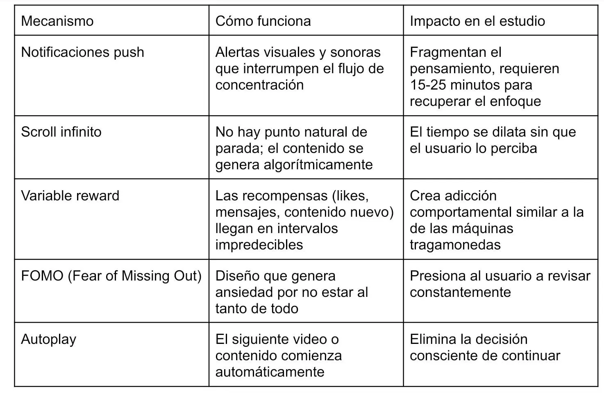
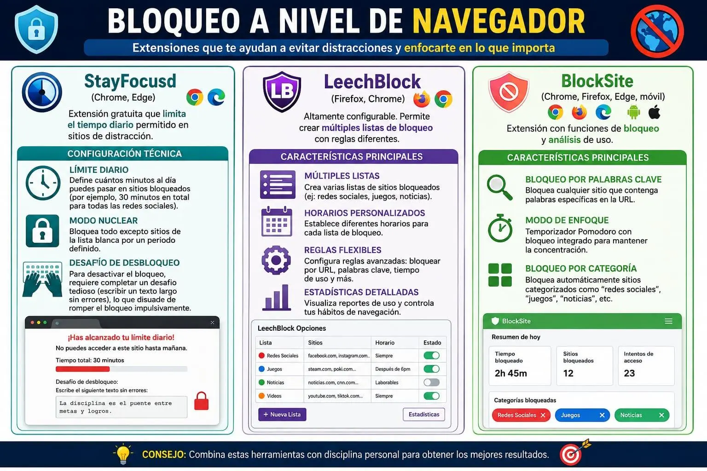
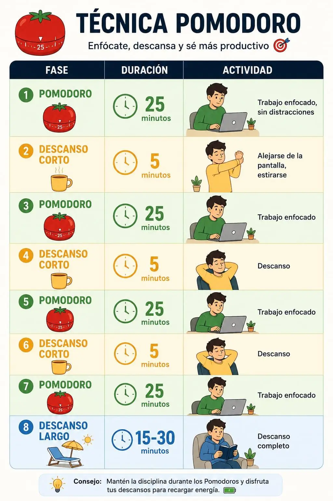
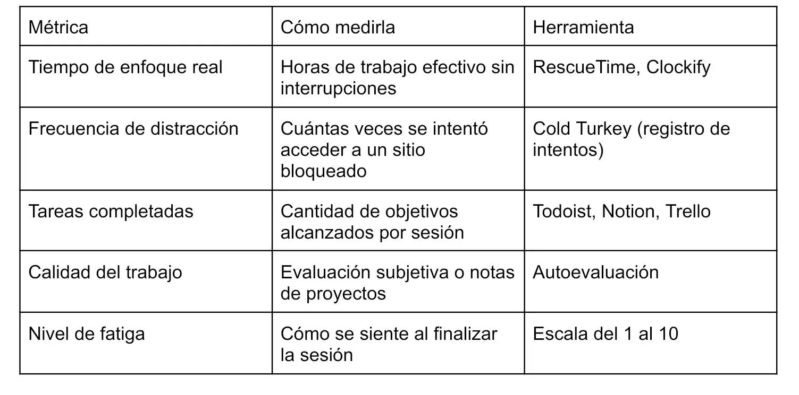

Gestión de distracciones digitales
Aplicaciones y métodos de bloqueo temporal de redes sociales para mejorar la concentración durante los tiempos de estudio.
El Problema: La Economía de la Atención
Las redes sociales, aplicaciones de mensajería y plataformas de streaming están diseñadas para capturar y retener la atención del usuario. Esto no es casualidad: funcionan bajo un modelo de negocio llamado economía de la atención, donde el producto vendido no es la aplicación, sino el tiempo que el usuario pasa en ella. Cada notificación, cada scroll infinito, cada “solo un minuto más” es el resultado de ingeniería psicológica deliberada.
Para un estudiante de computación que necesita concentrarse en tareas técnicas —como diagnosticar un sistema térmico, configurar una red o escribir código— estas distracciones representan un costo real: tiempo perdido, calidad reducida y frustración acumulada.
¿Por qué es difícil concentrarse con las computadoras modernas?

El Contexto de la Computadora como Herramienta de Trabajo y Distracción
La misma máquina que se usa para estudiar (laptop, PC) es la que contiene las distracciones. A diferencia de un libro de texto, la computadora es multifuncional: en una misma pantalla coexisten el procesador de textos, el navegador con 20 pestañas, WhatsApp Web, notificaciones de correo y la tentación de abrir YouTube “solo un rato”.
Esto crea un conflicto de uso: la herramienta de productividad es simultáneamente la fuente de distracción.
Métodos de Bloqueo Temporal: Estrategias Técnicas
Bloqueo a Nivel de Aplicación
Estas herramientas funcionan dentro del sistema operativo, bloqueando aplicaciones específicas durante períodos definidos.
Cold Turkey (Windows, macOS)
Una de las aplicaciones más rigurosas del mercado. Permite bloquear aplicaciones, sitios web e incluso el acceso a Internet completo.
Características técnicas:
- Bloqueos programados: configura horarios fijos de estudio donde ciertas apps están inaccesibles.
- Bloqueo nuclear: una vez activado, no se puede desactivar hasta que termine el tiempo programado (incluso reiniciando la computadora).
- Listas personalizables: crea listas de “sitios permitidos” vs “sitios bloqueados”.
- Estadísticas de uso: muestra cuánto tiempo se pasa en cada aplicación.
Freedom (Windows, macOS, iOS, Android)
Funciona en todos los dispositivos simultáneamente. Si bloqueas redes sociales en la laptop, también se bloquean en el celular.
Características técnicas:
- Sincronización multiplataforma: un solo bloqueo afecta todos los dispositivos vinculados.
- Sesiones programadas: bloqueos recurrentes (por ejemplo, todos los días de 8:00 a 12:00).
- Modo bloqueo: impide el acceso a sitios y apps durante la sesión activa.
- Historial de sesiones: registra cuántas sesiones de enfoque se completaron.
Bloqueo a Nivel de Navegador

Bloqueo a Nivel de Red (Router)
Esta estrategia bloquea el acceso a sitios de distracción para todos los dispositivos conectados a la red, no solo para la computadora.
Configuración en Router Doméstico
La mayoría de routers modernos permiten configurar filtros de contenido.
Pasos técnicos generales:
- Acceder al panel de administración del router (generalmente 192.168.1.1 o 192.168.0.1).
- Navegar a la sección de “Control Parental”, “Filtros de Contenido” o “Firewall”.
- Agregar dominios a la lista de bloqueo:
- facebook.com
- instagram.com
- twitter.com
- tiktok.com
- youtube.com
Pi-hole (Raspberry Pi)
Solución técnica avanzada: un servidor DNS privado que bloquea dominios a nivel de red antes de que lleguen al dispositivo.
Características técnicas:
- Se instala en una Raspberry Pi o en un servidor local.
- Bloquea dominios de publicidad, rastreadores y sitios de distracción.
- Panel de administración web para gestionar listas de bloqueo.
- Estadísticas detalladas de consultas DNS y bloqueos.
Modo de Enfoque Integrado en el Sistema Operativo
Windows: Modo de Concentración
Windows 11 incluye una función nativa llamada Modo de Concentración (anteriormente “Enfoque”).
Configuración:
- Configuración → Sistema → Concentración: activar “Ocultar insignias en aplicaciones de la barra de tareas”.
- Activar “Ocultar parpadeo de aplicaciones en la barra de tareas”.
- Configurar “No molestar” automático durante horarios de estudio.
- Integración con el Calendario de Outlook para sesiones automáticas.
macOS: Enfoque
macOS tiene perfiles de Enfoque configurables.
Configuración:
- Preferencias del Sistema → Notificaciones y Enfoque → Enfoque.
- Crear un perfil “Estudio” que:
- Permite notificaciones solo de apps educativas.
- Bloquea notificaciones de redes sociales.
- Se activa automáticamente según horario o ubicación.
Linux: GNOME Pomodoro / SelfControl
- GNOME Pomodoro: temporizador Pomodoro con bloqueo de notificaciones.
- SelfControl: aplicación de código abierto que bloquea sitios web de forma irreversible durante el tiempo configurado.
Métodos Complementarios (No Tecnológicos)
Las herramientas de bloqueo son efectivas, pero funcionan mejor combinadas con estrategias de gestión de la atención.
Técnica Pomodoro
Método de gestión del tiempo que divide el trabajo en intervalos de enfoque intenso seguidos de descansos cortos.

Métricas de Productividad: Cómo Saber si Funciona
